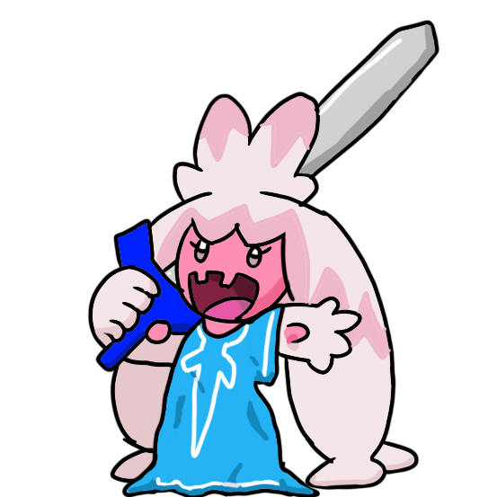

Hello and welcome; you may know me as theDuckPancake, the guy who ruined r/Breath_of_the_Wild for 914 days straight with an idea that wasn't even mine.
If you are here, you may be asking: Will I be doing drawings for the next Zelda game, whenever that may be? The answer is...
...uh, maybe? We'll see how it goes.

This website is, essentially, a journal of any and all progress I make in my various endeavours henceforth, cause I've spent the last few years actually just rotting away. Need something to hold myself accountable, y'know?
Well, why make a website, rather than a personal journal? Originally, it was just going to be a fun little practice project and I had no intention of deploying it - but then I remembered people asking for a collection of all the bad drawings, which I never delivered on. I tried using wordpress many years ago, but didn't like how restrictive it felt and never continued with it. So I figured I may as well re-attempt that plus keep the whole journal thing. And, you know, I could just practise in private, slowly improving until I'm happy enough to post it, but where's the fun in that, right?
If you've any thoughts to improve the website, queries, or you'd like to contact me for other more general things, do that through Reddit DMs, email me at theduckpancake@gmail.com, or on Discord (theDuckPancake). I've tried to make the website as accessible as I can, but I'm always open to any feedback. Either way, I plan to continue to update and improve this website for the forseeable future.